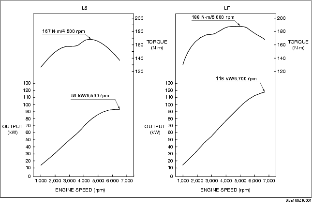

Technical Guide ➭ ENGINE ➭ OUTLINE[L8, LF] ➭ ENGINE SPECIFICATION [L8, LF]
ENGINE SPECIFICATION [L8, LF]
id0100a4113300
{: #wp1059779}
Specification
|
Specification {: #wp1059980} |
||||||
|---|---|---|---|---|---|---|
|
L8 {: #wp1060186} |
LF {: #wp1060189} |
|||||
|
MECHANICAL {: #wp1059792} |
||||||
|
Type {: #wp1060017} |
DOHC-16 valves in-line, 4-cylinder {: #wp1060032} |
|||||
|
Combustion chamber {: #wp1060039} |
Pentroof {: #wp1060054} |
|||||
|
Displacement {: #wp1060061} |
(ml {cc, cu in}) {: #wp1060067} |
1,798 {: #wp1060076} {1,798, 110.0} {: #wp1060266} |
1,999 {: #wp1060079} {1,999, 122.0} {: #wp1060280} |
|||
|
Bore × stroke {: #wp1060083} |
(mm {in}) {: #wp1060089} |
83.0 × 83.1 {: #wp1060098} {3.26 ×3.27} {: #wp1060312} |
87.5 × 83.1 {: #wp1060101} {3.44 ×3.27} {: #wp1060330} |
|||
|
Compression ratio {: #wp1060105} |
10:8 {: #wp1060120} |
|||||
|
Compression pressure {: #wp1060127} |
(kPa {kgf/cm2, psi} [rpm]) {: #wp1060133} |
1,750 {: #wp1060142} {17.85, 253.8} [300] {: #wp1060385} |
1,720 {: #wp1060145} {17.54, 249.5} [300] {: #wp1060403} |
|||
|
Valve timing {: #wp1060149} |
IN {: #wp1060152} |
Open {: #wp1060158} |
BTDC (°) {: #wp1060161} |
4 {: #wp1060164} |
0-30 {: #wp1060167} |
|
|
Close {: #wp1060467} |
ABDC (°) {: #wp1060470} |
33 {: #wp1060473} |
32-62 {: #wp1060476} |
|||
|
EX {: #wp1060439} |
Open {: #wp1060445} |
BBDC (°) {: #wp1060448} |
37 {: #wp1060451} |
42 {: #wp1060454} |
||
|
Close {: #wp1060423} |
ATDC (°) {: #wp1060426} |
4 {: #wp1060429} |
5 {: #wp1060432} |
|||
|
Valve clearance {: #wp1060595} |
(mm {in}) {: #wp1060601} |
IN {: #wp1060604} |
0.22-0.28 {0.0087-0.011} [Engine cold] {: #wp1060610} |
|||
|
EX {: #wp1060628} |
0.27-0.33 {0.0107-0.0129} [Engine cold] {: #wp1060634} |
|||||
|
LUBRICATION SYSTEM {: #wp1060711} |
||||||
|
Type {: #wp1060746} |
Force-fed type {: #wp1060761} |
|||||
|
Oil pressure (reference value) {: #wp1060785} [oil temperature: 100°C {212°F}] {: #wp1060818} |
(kPa {kgf/cm2, psi} [rpm]) {: #wp1060794} |
234-521 {2.39-5.31, 33.9-75.5} {: #wp1060800} [3,000] {: #wp1060873} |
337-591 {3.44-6.03, 49.0-85.8} {: #wp1060803} [3,000] {: #wp1060895} |
|||
|
Oil pump {: #wp1060901} |
Type {: #wp1060904} |
Trochoid gear type {: #wp1060916} |
||||
|
Relief valve opening pressure {: #wp1060930} (reference value) {: #wp1060991} |
(kPa {kgf/cm2, psi} {: #wp1060936} |
450-550 {4.59-5.61, 65.3-79.8} {: #wp1060942} |
420-520 {4.28-5.30, 60.9-75.4} {: #wp1060945} |
|||
|
Oil cooler {: #wp1061048} |
Type {: #wp1061051} |
Water-cooled {: #wp1061063} |
||||
|
Oil filter {: #wp1061104} |
Type {: #wp1061107} |
Full-flow, paper element {: #wp1061119} |
||||
|
Bypass pressure {: #wp1061135} |
(kPa {kgf/cm2, psi}) {: #wp1061141} |
80-120 {0.82-1.22, 11.6-17.4} {: #wp1061147} |
||||
|
Oil capacity (approx. quantity) *1 {: #wp1061253} |
Total (dry engine) {: #wp1061256} |
(L {US qt, lmp qt}) {: #wp1061262} |
4.6 {4.9, 4.0} {: #wp1061268} |
|||
|
Oil replacement {: #wp1061308} |
(L {US qt, lmp qt}) {: #wp1061314} |
3.9 {4.1, 3.4} {: #wp1061320} |
||||
|
Oil and oil filter replacement {: #wp1061286} |
(L {US qt, lmp qt}) {: #wp1061292} |
4.3 {4.5, 3.8} {: #wp1061298} |
||||
|
Oil capacity (approx. quantity) (Without oil cooler) *2 {: #wp1061502} |
Total (dry engine) {: #wp1061505} |
(L {US qt, lmp qt}) {: #wp1061511} |
4.75 {5.02, 4.18} {: #wp1061517} |
|||
|
Oil replacement {: #wp1061558} |
(L {US qt, lmp qt}) {: #wp1061564} |
4.05 {4.28, 3.56} {: #wp1061570} |
||||
|
Oil and oil filter replacement {: #wp1061536} |
(L {US qt, lmp qt}) {: #wp1061542} |
4.45 {4.70, 3.92} {: #wp1061548} |
||||
|
Oil capacity (approx. quantity) (With oil cooler) *2 {: #wp1061763} |
Total (dry engine) {: #wp1061766} |
(L {US qt, lmp qt}) {: #wp1061772} |
4.85 {5.12, 4.27} {: #wp1061778} |
|||
|
Oil replacement {: #wp1061820} |
(L {US qt, lmp qt}) {: #wp1061826} |
4.05 {4.28, 3.56} {: #wp1061832} |
||||
|
Oil and oil filter replacement {: #wp1061798} |
(L {US qt, lmp qt}) {: #wp1061804} |
4.55 {4.81, 4.00} {: #wp1061810} |
||||
|
COOLING SYSTEM {: #wp1062036} |
||||||
|
Type {: #wp1062093} |
Water-cooled, Electromotive {: #wp1062108} |
|||||
|
Coolant capacity (approx. quantity) {: #wp1062159} |
(L {US qt, lmp qt}) {: #wp1062168} |
7.5 {7.9, 6.6} {: #wp1062174} |
||||
|
Water pump {: #wp1062247} |
Type {: #wp1062253} |
Centrifugal, V-ribbed belt-driven {: #wp1062262} |
||||
|
Thermostat {: #wp1062319} |
Type {: #wp1062325} |
Wax, bottom-bypass {: #wp1062334} |
||||
|
Opening temperature {: #wp1062402} |
(°C {°F}) {: #wp1062405} |
80-84 {176-183} {: #wp1062411} |
||||
|
Full-open temperature {: #wp1062380} |
(°C {°F}) {: #wp1062386} |
97 {207} {: #wp1062389} |
||||
|
Full-open lift {: #wp1062358} |
(mm {in}) {: #wp1062364} |
8.0 {0.31} or more {: #wp1062367} |
||||
|
Radiator {: #wp1062623} |
Type {: #wp1062629} |
Corrugated fin {: #wp1062638} |
||||
|
Cooling system cap {: #wp1062704} |
Cap valve opening pressure {: #wp1062710} |
(kPa {kgf/cm2, psi}) {: #wp1062713} |
93.2-122.6 {0.95-1.25, 13.5-17.8} {: #wp1062719} |
|||
|
Cooling fan {: #wp1062816} |
Type {: #wp1062822} |
Electric {: #wp1062831} |
||||
|
Number of blades {: #wp1062901} |
5 {: #wp1062910} |
|||||
|
Outer diameter {: #wp1062879} |
(mm {in}) {: #wp1062882} |
360 {14.2} {: #wp1062888} |
||||
|
Fan motor output {: #wp1062857} |
(W) {: #wp1062860} |
120 {: #wp1062866} |
||||
|
FUEL SYSTEM {: #wp1063109} |
||||||
|
Injector {: #wp1063170} |
Type {: #wp1063176} |
Hi-ohmic {: #wp1063185} |
||||
|
Type of fuel delivery {: #wp1063233} |
Top-feed {: #wp1063242} |
|||||
|
Type of drive {: #wp1063211} |
Voltage {: #wp1063220} |
|||||
|
Pressure regulator control pressure {: #wp1063390} |
(kPa {kgf/cm2, psi}) {: #wp1063399} |
Approx. 390 {3.98, 56.6} {: #wp1063405} |
||||
|
Fuel pump type {: #wp1063499} |
Electric {: #wp1063514} |
|||||
|
Fuel tank capacity {: #wp1063576} |
(L {US gal, lmp gal}) {: #wp1063585} |
50 {13, 11} {: #wp1063591} |
||||
|
EMISSION SYSTEM {: #wp1063680} |
||||||
|
EGR type {: #wp1063745} |
Stepping motor {: #wp1063760} |
|||||
|
Catalyst form {: #wp1063822} |
WU-TWC (monolith), TWC (monolith) {: #wp1063837} |
|||||
|
Evaporative emission (EVAP) control system {: #wp1063900} |
Charcoal canister type {: #wp1063915} |
|||||
|
Positive crankcase ventilation (PCV) system {: #wp1063977} |
Closed type {: #wp1063992} |
|||||
|
CHARGING SYSTEM {: #wp1064054} |
||||||
|
Battery {: #wp1064115} |
Voltage {: #wp1064121} |
(V) {: #wp1064127} |
12 {: #wp1064130} |
|||
|
Type and capacity {: #wp1064158} (5-hour rate) {: #wp1064276} |
(A·h) {: #wp1064164} |
46B24L (36) {: #wp1064167} |
||||
|
Generator {: #wp1064306} |
Output {: #wp1064312} |
(V-A) {: #wp1064318} |
12-100 {: #wp1064321} |
|||
|
Regulated voltage {: #wp1064371} |
Controlled by PCM {: #wp1064380} |
|||||
|
Self diagnosis function {: #wp1064349} |
||||||
|
IGNITION SYSTEM {: #wp1064529} |
||||||
|
Ignition system {: #wp1064590} |
Type {: #wp1064596} |
SEI (Single Electronic Ignition) {: #wp1064605} |
||||
|
Spark advance {: #wp1064677} |
Electronic {: #wp1064686} |
|||||
|
Firing order {: #wp1064655} |
1-3-4-2 (all cylinders independent firing) {: #wp1064664} |
|||||
|
{: #wp1064642} |
||||||
|
Spark plug {: #wp1064896} |
Type {: #wp1064902} |
L303 18 110 (ITR5F13) {: #wp1064911} |
L3G2 18 110, L3Y1 18 110 {: #wp1064914} |
|||
|
STARTING SYSTEM {: #wp1064987} |
||||||
|
Starter {: #wp1065048} |
Type {: #wp1065057} |
Coaxial reduction {: #wp1065063} |
||||
|
Output {: #wp1065094} |
(kW) {: #wp1065097} |
1.4 {: #wp1065100} |
||||
*1: Applied VIN (Assumed)
European (L.H.D.) specs.
JMZ NC18F2*# 100001-128293
JMZ NC1882*# 100001-128293
JMZ NC18F6*# 100001-128293
U.K. specs.
JMZ NC18F20# 100001-128293
JMZ NC18820# 100001-128293
JMZ NC18F60# 100001-128293
Australian specs.
JM0 NC30F100 100001-102477
*2: Applied VIN (Assumed)
European (L.H.D.) specs.
JMZ NC18F2*# 128294-
JMZ NC1882*# 128294-
JMZ NC18F6*# 128294-
U.K. specs.
JMZ NC18F20# 128294-
JMZ NC18820# 128294-
JMZ NC18F60# 128294-
Australian specs.
JM0 NC30F100 102478-
Recommended engine oil
|
Item {: #wp1065718} |
Specification {: #wp1065720} |
|||||
|---|---|---|---|---|---|---|
|
Europe {: #wp1065922} |
Except Europe {: #wp1065937} |
|||||
|
Grade {: #wp1065540} |
API SL, SM or ACEA A3/A5 {: #wp1065542} |
API SL or ACEA A3/A5 {: #wp1065598} |
API SL or ACEA A3 {: #wp1065601} |
API SL, SM or ACEA A3 {: #wp1065604} |
API SG/SH/SJ/SL/SM or ILSAC GF-2/GF-3/GF-4 {: #wp1065610} |
|
|
Viscosity (SAE) {: #wp1065765} |
5W-30 {: #wp1065768} |
10W-40 {: #wp1065774} |
5W-20 {: #wp1065780} |
40, 30, 20, 20W-20, 10W-30, 10W-40, {: #wp1065783} 10W-50, 20W-40, 15W-40, 20W-50, {: #wp1066052} 15W-50, 5W-20, 5W-30 {: #wp1066066} |
||
|
Remarks {: #wp1065787} |
|
Mazda genuine Dexelia oil e.g. {: #wp1065793} |
|
|
||
Fuel type
|
Fuel {: #wp1066173} |
Specification {: #wp1066175} |
|---|---|
|
Premium unleaded fuel (Conforming to EN 228*1) (Conforming to Fuel Quality Standards Act 2000*2) {: #wp1066232} |
95 or above {: #wp1066117} |
*1 : {: #wp1066256} Europe {: #wp1066275} *2 : {: #wp1066281} Australia
Engine Performance Curve
